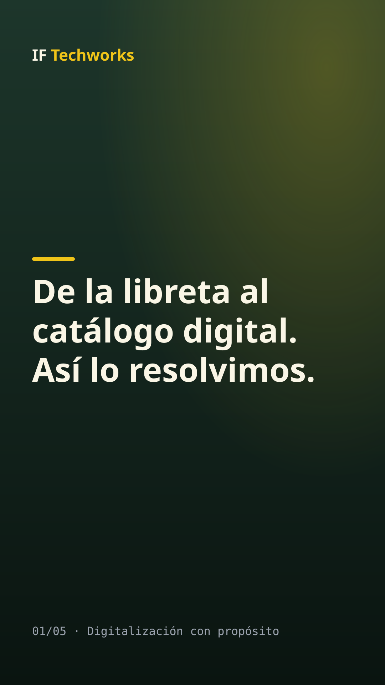
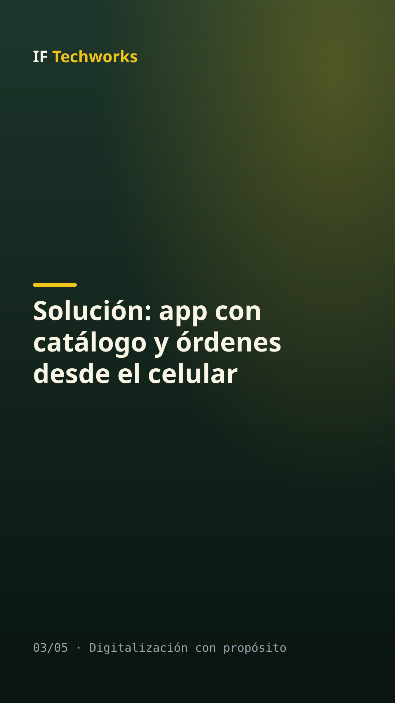
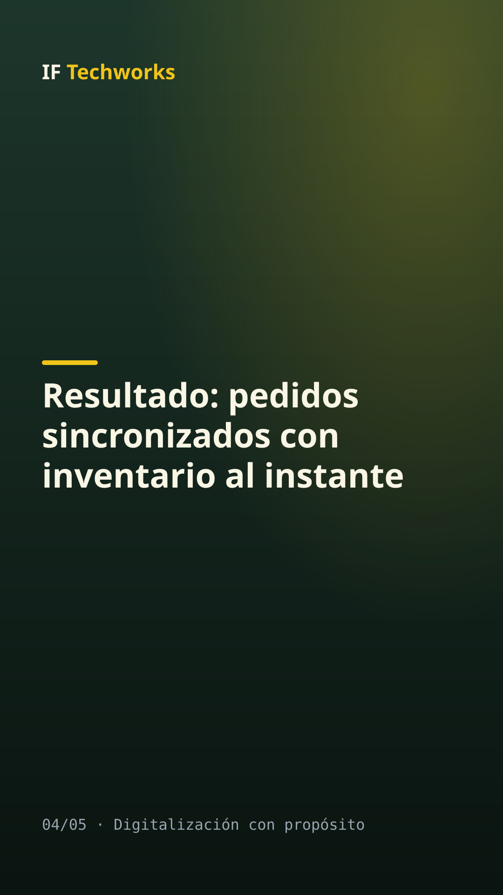

SIMULACIÓN: contenido generado por el backend simulado, no por ootto.
De la libreta al catálogo digital. Así lo resolvimos.
Alternativas:



De la libreta al catálogo digital. Así lo resolvimos. ✅ Problema: vendedores de calle anotaban pedidos en papel ✅ Solución: app con catálogo y órdenes desde el celular ✅ Resultado: pedidos sincronizados con inventario al instante 👉 Agendá un diagnóstico sin compromiso. Link en la bio. #IFTechworks #DigitalizaciónConPropósito #PymesGuatemala #IoT #Emprendedores
De la libreta al catálogo digital. Así lo resolvimos. ✅ Problema: vendedores de calle anotaban pedidos en papel ✅ Solución: app con catálogo y órdenes desde el celular ✅ Resultado: pedidos sincronizados con inventario al instante 👉 Agendá un diagnóstico sin compromiso. Link en la bio. #IFTechworks #DigitalizaciónConPropósito #PymesGuatemala #IoT #Emprendedores
Aprobar: python main.py aprobar 20261028-232446-casos-a6a3 --por "Tu nombre"